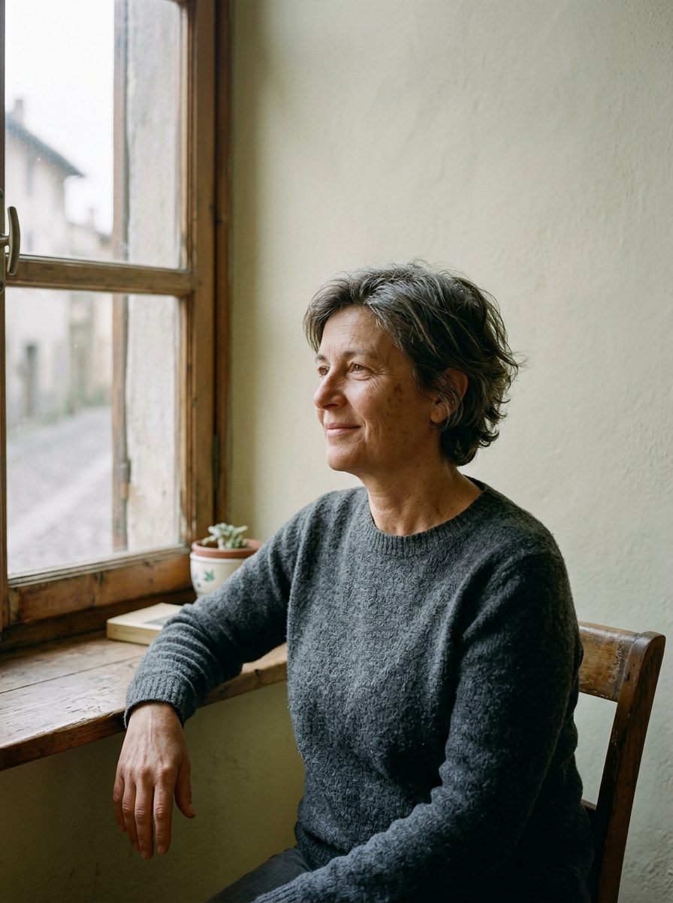

«Avevo smesso di truccarmi per coprire il rossore e lo peggioravo. Marta mi ha detto cosa togliere prima ancora di cosa mettere. Dopo tre mesi esco senza fondotinta.»
Lucia Bonettiviene da noi dal 2023 per la pelle sensibile
